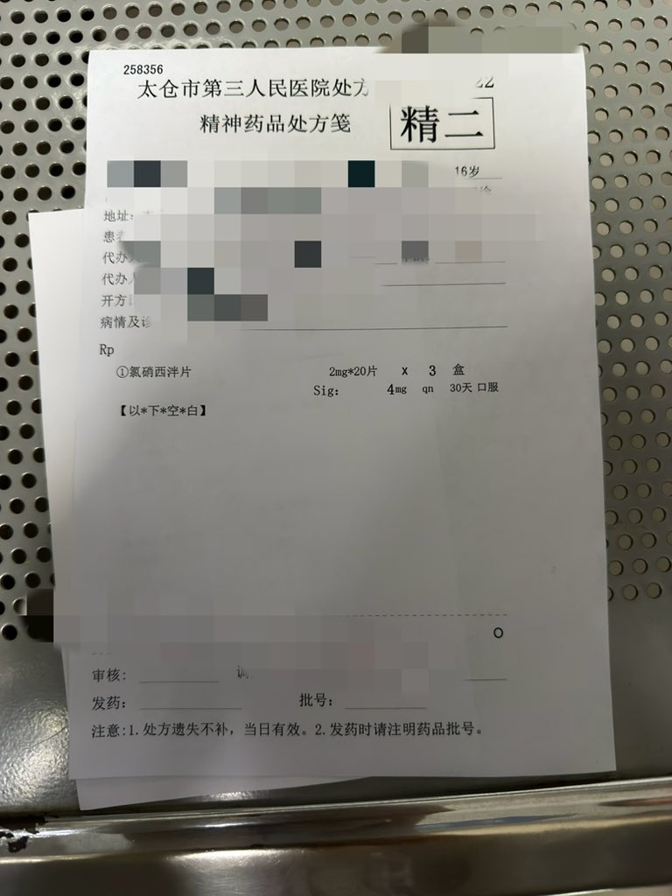

猫卷
@lumigj02
哎没事询问笔录嘻嘻哈哈乐一下装个老实卖个惨就完事了，讯问笔录那才是真G了✋😭✋

池鱼鱼🍥
@Chiyuyu520
讽刺的是她家长原本是想告我卖药
但是池鱼未成年人 buff 加持
然后警察表示接到上级（池鱼认为是 110 指挥中心）的线索（池鱼认为是她妈在那胡说八道）
然后问 q 子有没有卖药之类的，我带药是干什么的，但是我能把处方拿出来。
hrt 药品没办法了本来就是给 q 子带的被收完了
我做笔录的身份是 “证人” https://t.co/pJvwcxvZnU https://t.co/SxHiMq1mYv